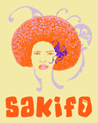

Un festival, c'est Sakifo
Jazz, photo, techno, lyrique et cinéma, l'été, c'est la période
préférée pour les foules pour partir en vacances et pour se masser
dans les festivals aux quatre coins de France.
La réunion a beau avoir la tête à l'envers et proposer la période
estivale en hiver, il reste que nous sommes en été et le département
974 héberge lui aussi son festival. C'est Sakifo.

Sakifo est un festival de musique, de toutes les musiques et propose
aux réunionnais de profiter aussi des bains de foule et des choix
cruciaux entre deux scènes ou deux artistes de talent jouent en même
temps. La programmation est très fournie et n'a rien à envier aus
Francofolies et autres vieilles charues bretonnes.
Sakifo lancera ses premières notes le 5 août à Saint Leu, une de mes
communes préférée de l'île, pour trois jour presque non stop de
musiques. Cette deuxième édition du festival prouve que l'évènement a
sa raison d'être et nous ne pouvons que leur souhaiter de durer. La
couverture médiatique devrait être plus importante que l'année
dernière encore, grâce à mon article bien sûr ;o) mais aussi par les
partenaires média comme Antenne Réunion et le Quotidien de
l'île. L'agence IPRéunion dont je vous recommande de surveiller le site, a annoncé que l'évenement sera couvert par ses photographes.
Demandez le programme, et découvrez qu'il est varié, ouvert sur la scène de métropole tout en n'oubliant pas les artistes locaux. Baster, Joe Zawinul ou Oussanoussava nous rappelleront en musique que nous sommes à la
Réunion pendant que le label F-Com fera résonner ses décibels
électroniques toute la nuit de samedi à dimanche. Dionysos,
Sinsemilia, Paul Personne quand a eux assurent une programmation rock et world de qualité.
Pour que ma revue du web soit complète, il me reste à préciser que le site Sakifo possède un forum ou il est possible de dialoguer avec les organisateurs qui, malgré une affiche de renom, restent proches du public. Allez-y!
Après le festival, voici quelques liens vers le site de Imaz Press Réunion pour rendre compte de ce
festival et patienter jusqu'à l'année prochaine :
| Dimanche 7 août au Village de Saint Leu : Le Massalé fait le plein |
Amazigh Kateb et ses sept complices : Gnawa amène le Maghreb à La Réunion |
|
Teddy Baptiste
et Joe Zawinul : Jazz au Cirk |
Nathalie Natiembé et Lo'Jo : Deux atypiques au Chapito |
|
Sakifo: Dionysos à la Ravine La divine surprise rock |
Boogaerts et Cherhal au Cirk |
|
Les Congolais de Kékélé et l'Ivoirien Tiken Jah Fakoly La voix de l'Afrique |
Tiken Jah Fakoly «africanise» la Ravine |
| Sinsémilia enflamme la Ravine | Le super bon vieux rock de Paul Personne |
|
Sinsémilia : «On vous souhaite tout le bonheur du monde» |
Lura, l'autre voix du Cap-Vert |
|
Gnawa Diffusion au Sakifo «Il faut se libérer des carcans» |
Jeudi 4 août : Place à la World music |
|
Le Réunionnais Davy Sicard et la Capverdienne Lura Créolité au Cirk |
Musique à Saint-Leu Sakifo, c'est parti ! |
| Joe Zawinul et Teddy Baptiste au Cirk | Le blues de Personne et de Triton au Sakifo |